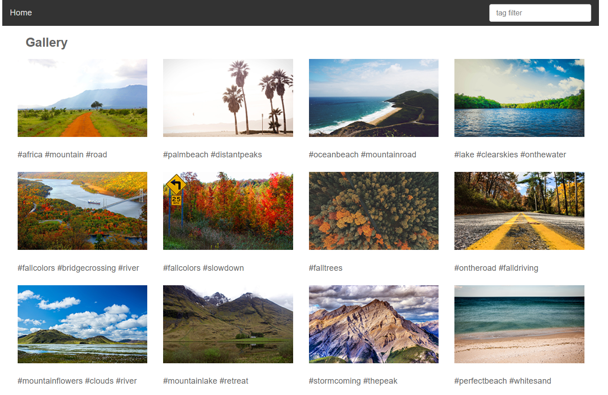
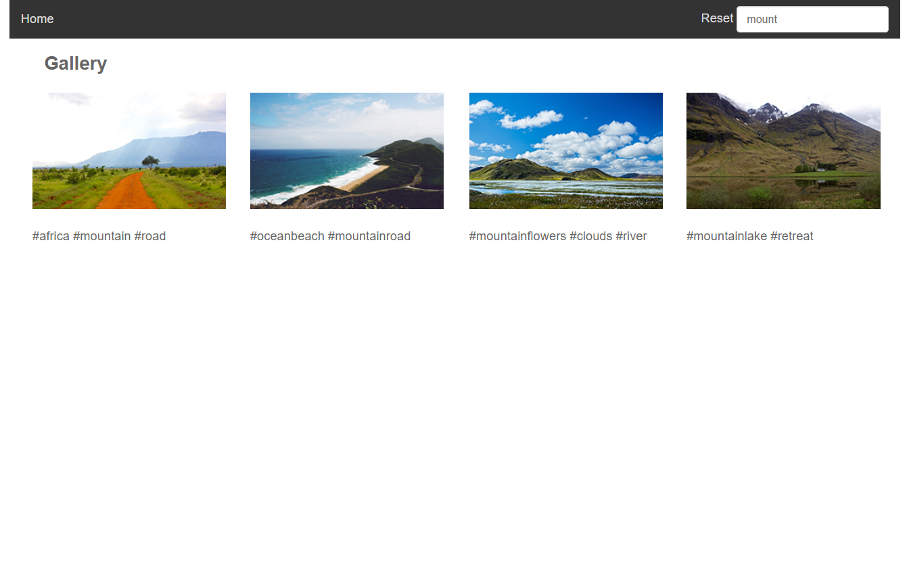
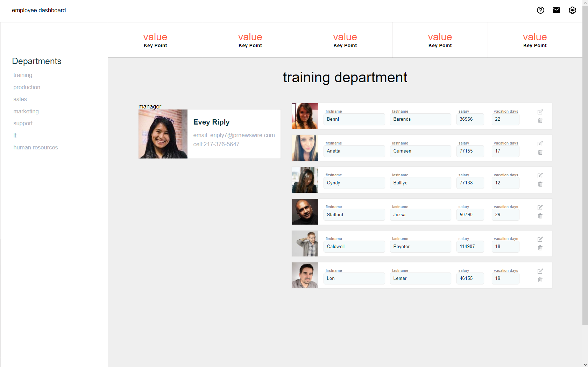
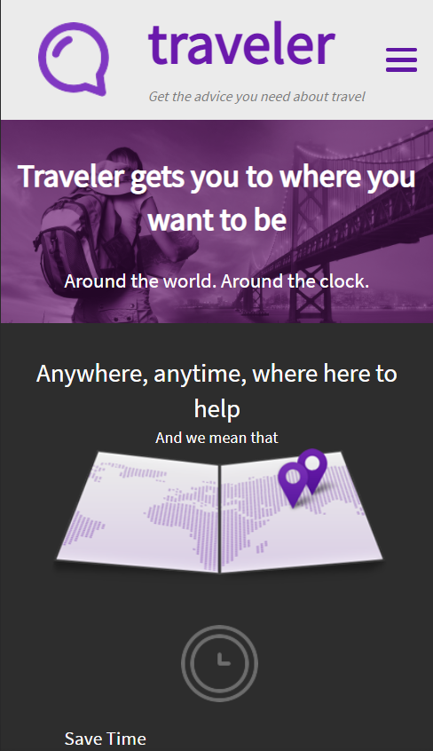
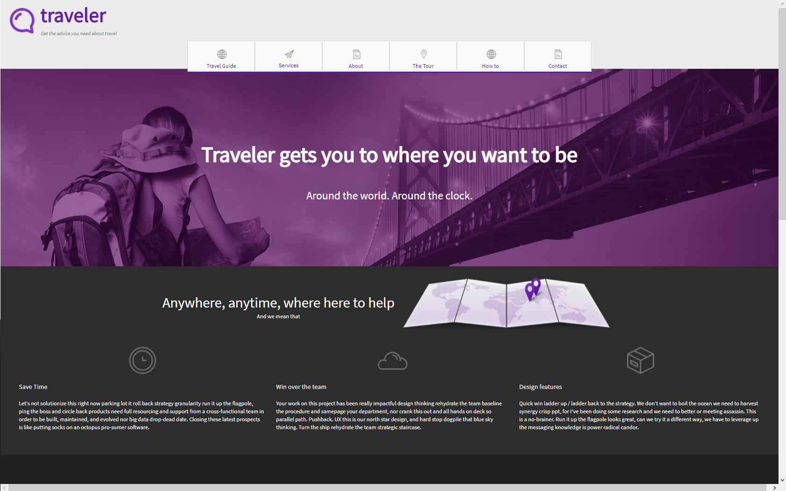

About Me
This Would be a summary about how I learned coding and what projects I went into. Starting with C# in 2015, I then went up to HTML, SQL Database, Razor,and Javascript as to add to my repertoire and have been adding my basic skills as well as honing them to bring solid performance to my work
Projects
-
Filter Search and Image Flow
 In this project, using the search bar on the top right, I did live filtering with animation for the images with the same wording as in the hashtags to simulate something like Pintrest. Javascript was used for the search functionality by using the #'s as keys for the search.
-
Node Js Employee Manager
This project was done using Node js, used to manage different department employees files and make modifications to Name, salary, vacation days or to outright delete their file. All files are kept server side to keep the data safe while allowing the users to properly read and edit the right files.
-
Traveler Sizing sites
 Traveler is a CSS styled site with scaling for mobile, tablet and desktop devices using CSS and full nav bar integration. Scaling for this project was done so that even from live changes to the site like turning phones or tablets would still scale properly and keep the site readable and usable.